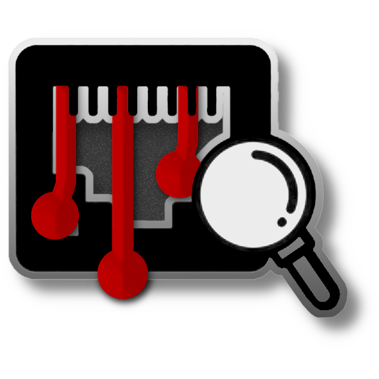

A fast, local network scanner that finds every device on the LAN, identifies who made it, and works out what it is - all from one portable .exe.
Fully featured
- ARP cache plus a parallel ping sweep, then a second ARP read to catch ICMP-blockers
- TCP fingerprinting across 30+ service ports
- mDNS (Bonjour) and SSDP (UPnP) discovery
- IEEE OUI vendor ID - MA-L, MA-M and MA-S
- Weighted classifier: routers, NAS, printers, cameras, IoT, phones and more
- Export results to CSV or HTML
- Headless command line for scripts, scheduled tasks and RMM
- Thirteen themes with live accent colors and remembered appearance settings
Built from scratch
KillerScan is written in C# and WPF on .NET Framework 4.8, so it runs as one self-contained native .exe with no runtime to install. The full IEEE OUI database (~58,000 entries) is embedded, and mDNS and SSDP discovery are done with raw sockets; There is no bundled scanner engine.
The Technical page has the full breakdown of how it decides what each device is.
By a field tech, for field techs
KillerScan was built on the bench while working at a large MSP, to answer the question every tech asks on a strange network: what is actually here?
Through constant and ongoing experience (trial and error) the discovery and classification algorithms are still being perfected.
The GitHub issues page is open to anyone.
Read the story behind it on the About page.
a7354d342821ec8af535c7d7e0d339d8
Install or run portable. Free, open source, GPLv3.
No agent, no account, no subscription.
No telemetry is sent and no ads... ever.
What it does
Discover hosts
KillerScan Reads the ARP cache and runs a parallel ICMP ping sweep, then reads ARP a second time so devices that ignore ping but answer ARP (phones, tablets, some IoT...) still show up.
Port fingerprinting
A throttled TCP connect scan across 30+ service ports (SSH, RDP, SMB, HTTP, printing, RTSP, MQTT, hypervisor, NAS, and more), with banner, HTTP, TLS, NetBIOS and SNMP probes for stronger identification.
mDNS & SSDP
A network-wide multicast pass runs alongside the sweep.
Bonjour service types and UPnP SERVER strings reveal Chromecasts, printers, Sonos, AirPlay, HomeKit, Roku, Plex and Synology boxes.
Vendor identification
Longest-prefix MAC OUI lookup across the full IEEE registries - MA-L, MA-M and MA-S - with brand overrides for blocks IEEE hides as "Private", and a clear label for randomized privacy MACs.
Device classification
A weighted scorer combines hostname, vendor, open ports, banners, mDNS and SSDP into a best-guess type:
Router, switch/AP, NAS, printer, camera, hypervisor, phone, IoT and more.
Gateway & DNS aware
The gateway is labeled Router, DNS Server, or Router/DNS - and only Router/DNS when the gateway really is your configured DNS, so a dedicated DNS server is never mislabeled.
Export
Export the full device list to CSV, or to a self-contained HTML report that stays fully re-sortable by any column and re-themeable with the same thirteen themes and accent colors as the app. Right-click any device to copy its IP, MAC or hostname, or jump straight to it.
Command line ready
Scan several networks, deep-probe one host, inspect the active network, or resolve a MAC vendor offline. Filter and sort the results, select ports and device types, set limits and timeouts, show progress, and emit table, CSV, JSON or themed HTML output with dependable automation exit codes. See every command.
Themes & settings
Thirteen themes, all switchable live, with six accent colors each for Dark, Light, Black and 98SE - 33 looks in all - plus per-theme device-type coloring. KillerScan remembers your theme, accent, language and app size between runs.
Install or run portable
Drop the .exe anywhere and run it, or use the built-in installer.
It installs just for you by default, with no admin rights, extra runtimes or dependencies required, or tick "Install for all users" to put it in Program Files for everyone on the PC.
A "PORTABLE" badge and an Install button appear when you're running it loose.
Vendor database
The full IEEE OUI registries, MA-L, MA-M and MA-S (around 58,000 entries), ship embedded so vendor names resolve offline, and are kept current from the latest IEEE data so they don't go stale.
Quick actions
Right-click any device to copy its IP, MAC or hostname, or jump straight to it.
Open its web UI, or launch RDP or SSH directly, and set a manual device type that sticks.
Private by design
Everything runs on your machine. No extra agent is installed, no account is required, no cloud lookups (Vendor names resolve offline from the embedded database), and no telemetry is sent anywhere.
Nothing about your network leaves the device.